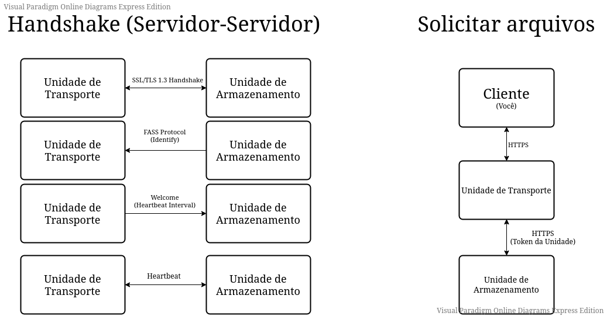

Fast Access Storage Service
Sobre o projeto FASS
FASS é um projeto desenvolvido por Lucas Scarpinelli Tomazetto, um estudante de ciências da computação, tendo com o objetivo facilitar o compartilhamento de arquivos para o usuário final.
FASS foi projetado para ser possível conectar múltiplos servidores de armazenamento(Unidades de Armazenamento) a um servidor central(Unidade de Transporte) de certa forma que o usuário final nunca
saiba o endereço físico de uma Unidade de Armazenamento.
Unidades (Servidores)
Unidade de Transporte
A Unidade de Transporte é a responsável por receber todas as requisições de arquivos dos clientes e encaminhá-las para a Unidade de Armazenamento correspondente.Unidade de Armazenamento
A Unidade de Armazenamento é a responsável por se conectar com a Unidade de Transporte e responder as suas solicitaçõs de arquivos.Estrutura de comunicação
SSL/TLS 1.3
A comunicação entre Cliente-Servidor(Opcional) e Servidor-Servidor(Obrigatório) é realizada através de um certificado com uma criptografia RSA 2048 bits.

Processo de Handshake (Servidor-Servidor)
Para garantir que apenas a Unidade de Transporte terá permissão para acessar os dados da Unidade de Armazenamento, um processo de Handshake é realizado, onde ocorre a troca de Tokens.O Token da Unidade de Transporte é único e nunca será alterado, ele deve ser colocado manualmente nas Unidades de Armazenamento. Durante o processo de Handshake, a Unidade de Armazenamento utiliza o protocol FASS para enviar o pacote de Identificação para a Unidade de Transporte, nele contém o Token único citado anteriormente, e um Token aleatório gerado pela Unidade de Armazenamento, esse Token é alterado a cada novo processo de Handshake, sendo utilizado para acessar os arquivos quando solicitado. Junto nesse mesmo pacote, também é enviado algumas informações sobre a Unidade de Armazenamento, como a porta em que a mesma está rodando e o seu ID.
Se o Token enviado for correto, a Unidade de Transporte deve responder com um pacote do tipo Welcome, contendo nele o intervalo do Heartbeat.